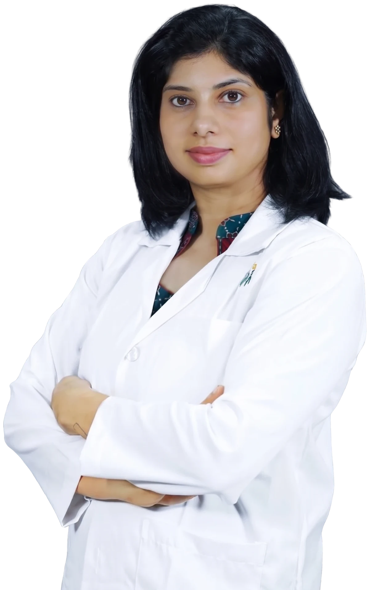

MD (USA) · FAAP · Penn State Health
Best Hematologist, Pediatrician and Bone Marrow Transplant Specialist in Bangalore
Dr. Neema Bhat is a US-trained Haemato-Oncologist caring for children and adults with blood disorders and blood cancers, and Head of the Bone Marrow Transplant Unit at Bhagawan Mahaveer Jain Hospital.
- 10+ years experience
- Children & adults
- HOD, BMT Unit

- Apollo Hospitals, Bannerghatta Road
- Apollo Cradle, Electronic City
- Bhagawan Mahaveer Jain Hospital

About the doctor
Meet Dr. Neema Bhat
Dr. Neema Bhat is a Haemato-Oncologist in Bangalore with more than ten years of experience treating blood disorders and blood cancers in children and adults. She completed her MD in the United States, followed by a fellowship (FAAP) in Pediatric Hematology, Oncology & Bone Marrow Transplantation at Penn State Health.
Today she is Program Director and HOD of the Bone Marrow Transplant Unit at Bhagawan Mahaveer Jain Hospital, run with Sankalp India Foundation, and has previously worked at BGS Gleneagles Global Hospitals and Fortis Hospitals.
- Adult & pediatric hematology
- Childhood cancers
- Autologous & allogeneic BMT
- Thalassemia & hemophilia care
Services
Best Hematologist in Bangalore
Nine specialist services across adult hematology and pediatric hemato-oncology — tap a service to book or learn more.
Anaemia Treatment
Iron-deficiency, nutritional and inherited anaemias — finding the cause, not just treating the count.
Book a consultationThalassemia Treatment
Transfusion programmes, iron chelation and evaluation for curative transplant.
Book a consultationHemophilia & Bleeding Disorders
Diagnosis and long-term management of hemophilia, von Willebrand disease and low platelets.
Book a consultationLeukaemia (Blood Cancer)
Acute and chronic leukaemias, with chemotherapy, targeted therapy and transplant planning.
Book a consultationLymphoma & Myeloma
Accurate subtyping and tailored treatment for Hodgkin, non-Hodgkin lymphoma and myeloma.
Book a consultationChildhood Leukaemia & Lymphoma
Child-centred treatment with close attention to comfort, growth and schooling.
Book a consultationPediatric Solid Tumours
Neuroblastoma, Wilms tumour, sarcomas and more, with a multidisciplinary team.
Book a consultationPediatric Blood Disorders
Sickle cell disease, aplastic anaemia, ITP and immune disorders in children.
Book a consultationBone Marrow Transplant
Autologous and allogeneic transplants for children and adults, from donor matching to follow-up.
Explore the transplant pageKnow the signs
When should you see a hematologist?
Many blood disorders begin with everyday symptoms. See a specialist if any of these last for more than a few weeks.
- Constant tirednessFatigue, breathlessness or looking pale for weeks.
- Easy bruising or bleedingNosebleeds, gum bleeding or bruises without injury.
- Recurring feversFevers or infections that keep coming back.
- Swollen lymph nodesPainless lumps in the neck, armpit or groin.
- Bone or joint painPersistent aches, especially in children.
- Unexplained weight lossWith night sweats or loss of appetite.
- Abnormal blood reportLow or high Hb, WBC or platelet counts.
- Family historyThalassemia, hemophilia or sickle cell in the family.
These signs have many causes — a consultation and simple blood tests help find the right one.
Why patients choose her
Specialist care, explained clearly
- US-trained specialistMD in the USA and a fellowship (FAAP) in Pediatric Hematology, Oncology & BMT at Penn State Health.
- Transplant leadershipProgram Director & HOD of the Bone Marrow Transplant Unit at Bhagawan Mahaveer Jain Hospital.
- Children and adultsOne specialist for blood disorders and blood cancers across all ages.
- Clear conversationsDiagnosis, options and next steps explained in plain language for the whole family.
Your first visit
What to expect, step by step
- 01
Book
Call, WhatsApp or send a request online — we confirm a slot.
- 02
Bring reports
Carry previous blood tests, scans and prescriptions.
- 03
Consultation
A detailed history, examination and discussion of options.
- 04
Your plan
Tests, treatment and follow-up — explained step by step.
Gallery
With patients, teams & peers
Moments from the ward, the clinic and conferences. Tap a photo to view it larger.
OPD timings
Where Dr. Neema Bhat consults
Please call or WhatsApp +91 78997 56677 to confirm before visiting.
- Apollo Hospitals, Bannerghatta RoadOPD · Mon – Sat, 11 AM – 4 PM
- Therapy ClinicEvenings · Mon – Sat, 5 – 7 PM
- Apollo One & Apollo Cradle, Electronic CityHosa Road · Fridays, 2 – 4 PM
- Bhagawan Mahaveer Jain HospitalBone Marrow Transplant Unit · Program Director & HOD
Pick a day to see her schedule
FAQs
Common questions
What does a hematologist treat?
A hematologist diagnoses and treats disorders of the blood, bone marrow and lymph nodes — such as anaemia, bleeding and clotting problems, thalassemia, and blood cancers like leukaemia, lymphoma and myeloma.
Does Dr. Neema Bhat treat children as well as adults?
Yes. Dr. Neema Bhat is trained in pediatric hematology and oncology and also treats adults, so she cares for blood disorders and blood cancers across all ages.
When should my child see a pediatric hemato-oncologist?
If your child has unexplained paleness, frequent bruising or bleeding, persistent fevers, swollen glands, bone pain or an abnormal blood test, a specialist opinion helps find the cause early.
Where does Dr. Neema Bhat consult?
OPD is at Apollo Hospitals, Bannerghatta Road (Mon – Sat, 11 AM – 4 PM), the Therapy Clinic (Mon – Sat, 5 – 7 PM) and Apollo One & Apollo Cradle, Electronic City (Fridays, 2 – 4 PM).
Can I get a second opinion?
Yes. Bring your reports, biopsy results and current treatment details, and Dr. Neema Bhat will review the diagnosis and options with you.
How do I book an appointment?
Call or WhatsApp +91 78997 56677, or use the booking form on the Contact page — your request opens in WhatsApp so you can review it before sending.
Questions about a diagnosis? Talk to a specialist.
Consultations for children and adults at Apollo Hospitals, Bannerghatta Road.